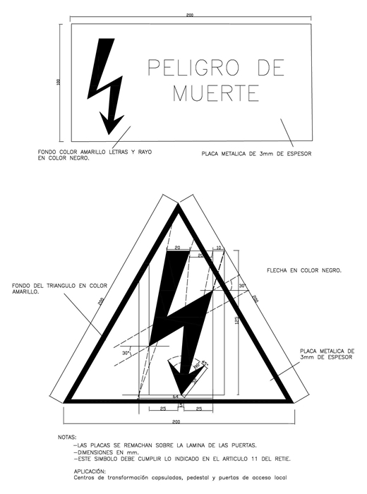
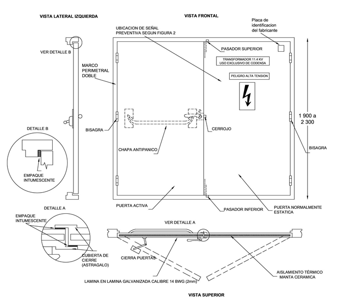

Siempre es más fácil conocer las normas ENEL-CODENSA
Rolex Rolex gold watch, compared with ordinary materials, gold watches are often expensive, but the replica rolex gold watch has the role of swiss replica watches hedging, so that it often becomes the first choice for collectors. The gold watch has value in the world, largely because the omega replica watch brand launched a commemorative limited edition watch or a replica hublot complex movement process or artistic attainments deep watches, mostly preferred gold precious metals such material. These watches tend to have a strong hedging function, therefore, Rolex Rolex gold watch reputation.

ET652 Puertas cortafuego
Datos adicionales
Número de especificación
ET 652
Fecha de vigencia
04/04/2019
Herramientas adicionales
- Contenido Ocultar
- 1. OBJETO
- 2. ALCANCE
- 3. CONDICIONES DE SERVICIO
- 4. SISTEMA DE UNIDADES
- 5. NORMAS DE FABRICACIÓN Y PRUEBAS
- 6. DEFINICIONES
- 7. REQUERIMIENTOS TÉCNICOS PARTICULARES
- 7.1 APLICACIÓN
- 7.2 DETALLES CONSTRUCTIVOS
- 7.3 CARACTERÍSTICAS
- 7.4 CLASIFICACIÓN
- 7.5 CARACTERÍSTICAS GEOMÉTRICAS Y DE CONSTRUCCIÓN
- 7.6 IDENTIFICACIÓN
- 7.7 MATERIALES
- 7.8 DIMENSIONES
- 7.9 PLANOS
- 8. PRUEBAS
- 8.1 MUESTRAS DE RUTINA Y/O RECEPCIÓN EN FABRICA
- 8.2 PRUEBA DE INTEGRIDAD Y AISLAMIENTO TÉRMICO
- 8.3 CRITERIOS DE ACEPTACIÓN
- 9 REQUISITOS DE LAS OFERTAS
- 10 GARANTÍA DE FÁBRICA
- 11 CERTIFICADOS DE CONFORMIDAD
1. OBJETO
Establecer las condiciones y exigencias de construcción, instalación y funcionamiento que deben satisfacer las puertas cortafuego a ser utilizadas en centros de transformación capsulados de la Compañía.2. ALCANCE
La presente especificación se aplicará a todas las puertas utilizadas en bóvedas resistentes al fuego por tres (3) horas que adquiera la Compañía.3. CONDICIONES DE SERVICIO
Las puertas cortafuego serán utilizadas en el sistema de distribución, bajo las siguientes condiciones:| CARACTERÍSTICAS AMBIENTALES | |
| a. Altura sobre el nivel del mar | 2 640 m |
| b. Ambiente | Tropical |
| c. Humedad | Mayor al 90 % |
| d. Temperatura máxima y mínima | 45 ºC y - 5 ºC respectivamente. |
| e. Temperatura promedio | 14 ºC. |
4. SISTEMA DE UNIDADES
En todos los documentos técnicos se deben expresar las cantidades numéricas en unidades del sistema Internacional (S.I.). Si se usan catálogos, folletos o planos, en sistemas diferentes de unidades, deben hacerse las conversiones respectivas.5. NORMAS DE FABRICACIÓN Y PRUEBAS
Las normas citadas en la presente especificación (o cualquier otra que llegare a ser aceptada por Compañía) se refieren a su última revisión.| NORMA | DESCRIPCIÓN |
| NFPA 251 | Standard Methods of Test of Fire Resistance Of Building Construction and materials 2006 edition |
| NFPA 252 | Pruebas contra incendios de conjuntos de puertas. |
| NFPA 257 | Estándar de las pruebas contra incendio para conjuntos en bloque de vidrio y ventanas. |
| NFPA 80 | Standard for Fire Doors and Fire Windows, 1999 Edition |
| ANSI/BHMA A156.3 | American National Standard for Exit Devices |
| ASTM A 653M | Especificaciones para aleaciones de piezas de acero, zinc galvanizado o zinc puro cubierto mediante el proceso de inmersión en caliente (“Galvannealed”). |
| ASTM E 152 | Métodos de pruebas contra incendio para ensambles de puertas o CAN4-S104M (M80). |
| EN 1634-1 | Ensayos de resistencia al fuego |
| UL 10 B | Standard for Fire Tests of Door Assemblies |
Pueden emplearse otras normas internacionalmente reconocidas equivalentes o superiores a las aquí señaladas, siempre y cuando se ajusten a lo solicitado en la presente especificación técnica.
6. DEFINICIONES
RESISTENCIA AL FUEGO DE TRES HORAS (MÍNIMO):La resistencia al fuego se define como “la aptitud de un elemento de construcción, componente, equipo o estructura, para conservar durante un tiempo determinado: la estabilidad, la estanqueidad, la no emisión de gases inflamables y el aislamiento térmico”. La resistencia al fuego de una puerta es su capacidad, expresada en tiempo, para contener un incendio, evitando que se propague a través de ella.
RESISTENCIA MECÁNICA AL FUEGO:
Característica de la puerta cortafuego de mantener la estabilidad estructural bajo fuego.
ESTABILIDAD (INTEGRIDAD):
Es la aptitud de la puerta para mantener su cohesión física, impidiendo el paso, a través de ella, de llamas y gases calientes capaces de provocar la ignición de materiales combustibles que estén situados a distancia de la cara no expuesta.
ESTANQUEIDAD:
Es la aptitud de la puerta para impedir el paso, a través de ella, de llamas y gases calientes capaces de provocar la ignición de materiales combustibles que estén adosados o muy próximos a la cara no expuesta al fuego.
NO EMISIÓN DE GASES INFLAMABLES:
Algunas puertas contienen materiales que se descomponen ante la acción del fuego. La emisión se detecta mediante el acercamiento de una llama piloto a la cara no expuesta de la puerta.
AISLAMIENTO TÉRMICO:
Es la capacidad de la puerta para impedir el paso de calor, por conducción a través de ella, de manera que la temperatura de la cara de la puerta no expuesta al fuego, no se eleve al punto de provocar la ignición de materiales combustibles adosados a ella.
CUBIERTA DE CIERRE (ASTRÁGALO):
La norma NFPA-80 establece que las puertas del tipo “oscilante de dos hojas” (swinging in pairs) con una resistencia al fuego de una hora y media o más, deben tener un astrágalo. El astrágalo es un molde adherido a una de las hojas de la puerta, en el borde de encuentro de las dos hojas, para proteger contra condiciones ambientales, minimizar el paso de luz entre las puertas o para retardar el paso de humo, llama o gases durante un fuego.
SELLADO CONTRA HUMOS:
Sistema fijado en el marco o el canto de la hoja con el propósito de restringir la cantidad de humos y gases calientes que puedan pasar a su través.
ELEMENTO DE CONEXIÓN O PUENTE TÉRMICO:
Es un espaciador interno que atraviesa la puerta o elemento que permite la conexión directa entre la cara expuesta y la no expuesta.
HOJA ACTIVA:
Es aquella que posee sistemas de apertura fijados en ella y es la más utilizada para las operaciones de paso a través del conjunto de cerramiento.
EMPAQUE INTUMESCENTE:
Junta de grafito que dilata hasta 25 veces su tamaño original a partir de una temperatura superior a 150 ºC
CERRADURA:
El objetivo de estos elementos, adheridos o integrados en las puertas, es facilitar su apertura para la evacuación de los ocupantes del recinto y garantizar el cierre de la puerta una vez se produce la conflagración. La cerradura de la puerta debe ser de fácil apertura, y la puerta debe tener incluida una manija o dispositivo antipánico resistente al fuego por 3 horas que abra desde el interior de la bóveda.
DISPOSITIVO ANTIPÁNICO:
Habitualmente, en forma de barra que se acopla a una altura intermedia de la puerta y se acciona pulsando de arriba hacia abajo, permitiendo la apertura rápida y sin dificultad en el sentido de evacuación.
CIERRA PUERTAS:
El cierra puertas es un elemento cuya función es la de cerrar la puerta con la potencia necesaria para garantizar la operación mecánica de la chapa o cerradura y de igual forma permitir su apertura sin mayores esfuerzos.
OBRA SOPORTE:
Tipo de construcción utilizada para el cerramiento del horno de ensayo y para fijar en él la puerta o elemento de cerramiento de huecos sometido a pruebas, el cuál posee una influencia cuantificable en cuanto a transmisión térmica entre dicha obra y la muestra ensayada, ofreciendo una resistencia a la deformación determinada, producida por una acción térmica aplicada. Sirve para reproducir los niveles de influencia en la deformación y de transmisión de calor que se esperan tener en la realidad
7. REQUERIMIENTOS TÉCNICOS PARTICULARES
7.1 APLICACIÓN
Las puertas serán instaladas en bóvedas para transformadores en edificios con acceso desde el interior o en algunos casos con acceso desde el exterior cuando existe construcción susceptible de ser afectada por humos o gases que se presentan fruto de la ocurrencia de un incendio, también cuando exista material inflamable cercano.Los requerimientos de instalación de las puertas deberán estar en cumplimiento del RETIE-NTC 2050.
La puerta debe ser construida en dos (2) hojas y cierre hermético, del tipo oscilante abriendo hacia fuera.
7.2 DETALLES CONSTRUCTIVOS
Los componentes básicos de una puerta resistente al fuego son:- La puerta, propiamente dicha, que como elemento esencial está equipada de una chapa de acero ensamblada.
- Cerradura,
- Guías de deslizamiento y topes: regulan el recorrido y disposición espacial del elemento.
- Sistema de cierre y retención: toda puerta resistente al fuego debe contar con un sistema de cierre automático, como puede ser cerradura ayudada por cierrapuertas.
7.3 CARACTERÍSTICAS
Las puertas cortafuego deben constituir una barrera resistente al paso de llamas, humo, calor, temperatura y otras partículas inherentes al fuego. Las características principales de las puertas son:- Estabilidad mecánica: construida con materiales suficientemente resistentes.
- Aislamiento térmico: impedir permitir el paso de calor y el consiguiente aumento de temperatura al otro lado.
- Estanqueidad a las llamas: impedir el paso de gases y llamas, susceptibles de continuar el incendio.
- Resistencia térmica suficiente para impedir que se produzcan en la cara no expuesta temperaturas superiores a las que se establecen en esta norma.
- Detección superficial de calor, indicadora de la evolución del incendio desde el lado no expuesto. No emisión de gases inflamables ni tóxicos tanto a temperatura normal o a la temperatura del incendio.
- No tener elementos cortantes o punzantes que sean peligrosos para los operadores
7.4 CLASIFICACIÓN
La norma NFPA - 80 clasifica las aberturas de los muros asignándoles una letra desde la A hasta la E con el fin de identificar los tipos más comunes. Esta clasificación no se refiere a las puertas en sí, sino a las aberturas.La puerta cortafuego del centro de transformación corresponde a una abertura de clase A (Se trata de las aberturas en muros resistentes al fuego que dividen un edificio en sectores de incendio). Las puertas para proteger estas aberturas tienen que tener un grado mínimo de resistencia al fuego de tres horas.
7.5 CARACTERÍSTICAS GEOMÉTRICAS Y DE CONSTRUCCIÓN
Los materiales empleados en la fabricación de la puerta, así como sus componentes (lámina, marco de la puerta, ferretería y sus elementos de fijación), deben tener en cuenta las siguientes exigencias:- Se debe verificar la compatibilidad entre los diferentes materiales utilizados, para evitar reacciones que provoquen deterioro del conjunto.
- La puerta no debe presentar aristas cortantes que puedan dañar al usuario cuando se realiza su utilización normal.
- La puerta debe garantizar un cierre hermético.
- El sistema del cierra puertas debe operar de tal manera que garantice el cierre hermético una vez opere el mecanismo.
7.6 IDENTIFICACIÓN
Cada puerta debe tener una identificación indeleble y permanente por medio de una placa metálica adherida en lugar visible, en la cara no expuesta con la siguiente información:- Nombre o razón social del fabricante.
- Dimensiones.
- Peso.
- Clasificación de la puerta (clase A, 3 horas)
- Mes y año de fabricación.
- BOG-CUN
- Contrato
- Información de la certificación de producto con norma técnica y con RETIE que incluya el ente que lo emitió, numero de certificado y vigencia.
La identificación debe ser ubicada en la parte superior derecha de la puerta normalmente fija.
También sobre esta puerta se remachará una placa metálica o, con la siguiente inscripción de letras indelebles:

El tamaño de las letras será mínimo de 10 mm de altura. Los asteriscos se cambiaran por el nivel de la tensión de la red (11.4kV, 13.2kV o 34.5kV).
La puerta deberá tener señales preventivas, de carácter permanente y que sean visibles, de acuerdo con la figura 2.
7.7 MATERIALES
LaminaSe utiliza acero de calidad comercial, recubierto con una aleación de zinc-hierro mediante el proceso de baño en caliente, conforme a las normas ASTM A653/A653M-95 ZF100 (A40), ASTM A755/A755M-95, ASTM A924/A924M-95, conocido comercialmente como acero galvanizado satinado o pulido.
Espesor del galvanizado promedio deberá ser de 13 micras en cualquier punto.
La puerta debe estar fabricada en lámina galvanizada calibre 14 BWG de espesor 2 mm, al igual que la puerta el marco debe ser resistente al fuego por tres horas y fabricada en laminada galvanizada calibre 14 BWG (2 mm).
Otros espesores pueden ser utilizados siempre y cuando se garantice el diseño y comportamiento ante el fuego, de la puerta y sus componentes.
La lámina de acero debe someterse a un proceso de limpieza, desengrase y fosfatizado, el cual debe garantizar que las superficies estén libres de grasas, óxidos o cualquier elemento extraño que disminuya la adherencia.
Aislante térmico
El aislamiento térmico disminuye la transmisión de calor por conducción entre la cara expuesta al fuego y la cara no expuesta de la puerta.
El material a ser utilizado debe tener la densidad y conductividad térmica que garantice las características de la curva de aumento de temperatura dadas en la norma NFPA-251 vigente (ver figura 1). Cualquier tipo de aislamiento o mezclas de ellos son susceptibles de ser utilizadas siempre y cuando se demuestre su comportamiento ante el fuego en conjunto con la puerta, mediante las pruebas de laboratorio indicadas en la presente especificación.
No se aceptarán aislamientos tales como fibras de asbesto y otros, que presenten un efecto nocivo al organismo y al medio ambiente.
Cerradura antipánico
Se debe garantizar que la chapa de la puerta no afecte las características y el buen funcionamiento de la misma. La chapa será de fácil y rápida apertura y sólo se permitirá el acceso a personal autorizado. La chapa abrirá desde dentro tan sólo con la aplicación de presión, aún cuando se encuentre asegurada con llave desde fuera.
El mecanismo consta de una barra horizontal situada sobre la hoja normalmente activa de la puerta, que abarca al menos, el 80% de la hoja movil. La barra debe estar situada a una altura comprendida entre 0,75 y 1,15 m. Esta barra, al ser empujada, abre un pestillo o hace girar una falleba, abriendo la puerta.
La fuerza necesaria para abrir la puerta no debe ser superior a 67 N (15 lbf).
Se exige la utilización de las chapas de seguridad antipánico debido a que esta facilita la apertura de la puerta ante la ocurrencia de un accidente donde el trabajador que se encuentre en el interior del local pierda el uso de las manos para girar una perilla normal.
La cerradura debe cumplir norma ANSI/BHMA A156.3-2001, grado 3, o su equivalente y ser resistente al fuego garantizando el cierre del conjunto (puerta activa y puerta pasiva), durante el periodo de exposición.
Esta cerradura debe tener una única llave para todas las puertas que se fabriquen bajo esta especificación y por fabricante. Con esto se busca mantener la seguridad para no permitir el acceso a la subestación por personas no calificadas, y asegurar el acceso fácil por el personal operativo de la Compañía.
Cierre hermético
Son varios los factores que determinan la toxicidad de los productos de la combustión sobre el ser humano, como la concentración de los gases en el aire, la duración de la exposición a los mismos y el estado físico de la persona.
Diversos ensayos indican que el efecto combinado de varios gases será mayor que la suma de los efectos de cada uno por separado (efecto sinérgico). Se ha comprobado, por lo demás, que los efectos tóxicos de los gases sobre las personas se intensifican durante los incendios porque el ritmo respiratorio se hace más rápido a causa del esfuerzo, el calor y el exceso de anhídrido carbónico. En tales condiciones, las concentraciones que ordinariamente se considerarían inofensivas pueden resultar peligrosas.
La acumulación de presión causada por el fuego es suficiente para forzar el paso del humo, calor y gases nocivos a través de las aberturas y grietas más pequeñas. El humo, los productos gaseosos de la combustión y las partículas en suspensión, son las principales causas de las muertes que se producen en los incendios. La principal función del cierre hermético es minimizar éste riesgo.
El cierre hermético se deberá mantener durante las tres horas de resistencia al fuego de la puerta.
7.8 DIMENSIONES
Anchos: Puertas dobles de 1 m por cada hoja ó 1,25 m por cada hojaAltura: 1900 a 2300 mm
7.9 PLANOS
Se deberán presentar los dibujos de taller indicando los dos tipos de puerta, marcos, acero, núcleo y espesor de los materiales, embutidos, refuerzos, anclajes, ubicación de los sujetadores expuestos y disposición de los herrajes corrientes como soporte de la evaluación técnica.Incluir un plano, identificando cada unidad con las marcas para las puertas y números que coincidan con los dibujos y el plano con las puertas hechos por el diseñador
8. PRUEBAS
8.1 MUESTRAS DE RUTINA Y/O RECEPCIÓN EN FABRICA
Se realizarán las siguientes verificaciones/revisiones:- Inspección visual/dimensional
- Revisión certificados de materia prima y materiales asociados al lote objeto de entrega
- Revisión de protocolos correspondientes a las pruebas de integridad y aislamiento térmico. Esta revisión se realizará para la primera entrega del contrato. Se acepta el dossier de pruebas realizado durante el proceso de certificación de producto con norma técnica y con RETIE, a cargo de un ente acreditado por la ONAC.
El muestreo para la Inspección visual y dimensional es el indicado en la tabla 1:
Se deberá contar por lo menos con una de las puertas armadas o ensambladas
TABLA 1. PLAN DE MUESTREO PARA INSPECCIÓN VISUAL Y DIMENSIONAL (NIVEL DE INSPECCIÓN II, NAC = 2,5%) de acuerdo con (NORMA NTC-ISO 2859-1)
| TAMAÑO DEL LOTE | TAMAÑO DE LA MUESTRA | NÚMERO PERMITIDO DE DEFECTUOSOS | NÚMERO DEFECTUOSOS PARA RECHAZO |
| 2 a 8 | 2 | 0 | 1 |
| 9 a 15 | 3 | 0 | 1 |
| 16 a 25 | 5 | 0 | 1 |
| 26 a 50 | 8 | 1 | 2 |
| 51 a 90 | 13 | 1 | 2 |
| 91 a 150 | 20 | 1 | 2 |
| 151 a 280 | 32 | 2 | 3 |
| 281 a 500 | 50 | 3 | 4 |
| 501 a 1200 | 80 | 5 | 6 |
8.1.1 INSPECCIÓN VISUAL
Se verificarán:
a. Las marcaciones descritas en el numeral 7.6
b. La buena terminación de todos los elementos constitutivos de la puerta y sus accesorios.
c. La ausencia de elementos cortantes o punzantes que sean peligrosos para los operadores
d. La ausencia de grietas, sopladuras, poros, exfoliaduras, ampolladuras, raspaduras u otros defectos.
e. Adecuado cierre y apertura.
f. Funcionamiento de las chapas
g. Verificación de holguras
h. Verificación de acabados, espesor y adherencia de la pintura
8.1.2 INSPECCIÓN DIMENSIONAL
La verificación de las dimensiones se hará con los instrumentos de medida que den la aproximación requerida (cinta metálica con divisiones de 1mm para longitudes y calibrador para los diámetros y espesores).
Se verificará con base en:
- Esquemas indicados en las figuras anexas a la presente especificación.
- Planos entregados por el fabricante y aprobados por la Compañía.
8.1.3 CERTIFICADOS MATERIA PRIMA Y MATERIALES
Los certificados a revisar son:
a. Certificado de análisis químico de la lámina del fabricante (subproveedor).
b. Certificado del aislante térmico utilizado (subproveedor) - si aplica.
c. Certificado del empaque intumescente utilizado
Certificado cerradura (cumplimiento norma para cerraduras anti pánico y resistencia al fuego por min 30 minutos
8.2 PRUEBA DE INTEGRIDAD Y AISLAMIENTO TÉRMICO
8.2.1 Instalación de las muestrasLa muestra a ensayar deberá ser instalada de la forma más parecida posible a lo que vaya a ser realizado en la práctica. La muestra se deberá montar en una obra soporte (tipo de construcción en la que la muestra se instala en la práctica y cuya utilidad se destina al cerramiento del horno) que represente lo que se va a utilizar en la práctica. El diseño del sistema de conexión de la puerta con la obra soporte, incluyendo cualquier fijación o material destinado a realizar la junta entre muestra y obra, deberá ser igual que lo que se utilice en la práctica y considerarse como parte integrante del elemento sometido a pruebas.
El área total de la puerta, así como las dimensiones mínimas de obra soporte, deberán estar expuestas a las condiciones de calentamiento.
Las muestras de ensayo y todos sus componentes deberán presentar las medidas reales que tendrán en la práctica, a menos que estas sean mayores que las dimensiones de la boca del horno disponible, la cual normalmente será de 3 m x 3 m. Las puertas que no puedan ensayarse a su tamaño real, deben ensayarse al máximo tamaño posible.
Si el ensayo se realiza sobre una sola cara, deberá indicarse claramente en el informe de pruebas resultante.
8.2.2 Holguras
Las holguras permitidas serán de acuerdo a lo indicado en la NFPA 80 numeral 6.3.1.7
8.2.3 Utilización de la instrumentación
8.2.3.1 Termopares
Termopares de horno (termopares de placa).
Los termopares de horno estarán de acuerdo a la Norma Europea EN 1363-1 y se distribuirán en el plano vertical a una distancia de 100 mm del plano que forma la construcción. Habrá al menos un termopar por cada 1,5 m2 de área expuesta del conjunto que forman la obra soporte y muestra, con un mínimo de cuatro.
Termopares de la cara no expuesta
Los termopares se fijarán en la cara no expuesta con el fin de obtener la evaluación de las temperaturas medias y máximas. Hay que aplicar los principios generales para la fijación de los termopares y las zonas de exclusión de estos mismos que figuran en la Norma Europea EN 1363-1. La temperatura de la obra soporte no se debe tener en consideración, por lo tanto no será necesaria la colocación de termopares en dicha obra.
No se situarán termopares a menos de 50 mm de cualquier herraje
Temperatura media
Se situarán cinco termopares, uno en el centro de las hojas y uno en el centro de cada cuarto de la superficie de la puerta. Estos termopares no se podrán situar a menos de 50 mm de cualquier junta o puente térmico ni a menos de 100 mm de los bordes de las hojas del cerramiento
Temperatura máxima
Se determinará la temperatura máxima con la ayuda de los cinco termopares destinados a la medición de la temperatura media, del termopar móvil y de los termopares adicionales situados de acuerdo a los descritos en los párrafos siguientes.
No se podrán situar termopares en los puntos de fijación (tornillos, clavos, etc.) que presenten un diámetro inferior a 12 mm, a menos que se hallen presentes de forma extensa por todo el elemento.
Temperatura del marco de la puerta
Los termopares se fijarán en cada una de las siguientes posiciones:
• Uno a media altura de cada elemento vertical de dicho marco
• Uno a mitad de la longitud del elemento horizontal superior del marco (dintel) y a no menos de 100 mm del borde entre las hojas de un elemento de cerramiento multihoja, situándolo en la zona por encima de la hoja primaria
• Uno a cada lado del elemento horizontal superior del marco (dintel) a 50 mm de cada una de las esquinas de la hoja
En cada posición los termopares se situarán lo más próximos que sea posible a la junta entre el marco y la obra soporte, es decir con el centro del disco a 15 mm. Independientemente de lo anterior, la distancia entre los termopares y el borde interior del marco no excederá 100 mm.
Temperatura en la hoja o cerramiento
Los termopares se deberán fijar a la cara de las hojas de la siguiente manera:
• A media altura, a 100 mm del borde vertical entre hoja y marco
• A mitad de la anchura, a 100 mm por debajo del borde entre hoja y marco
• A 100 mm de las juntas verticales, y simultáneamente a 100 mm por debajo de la junta horizontal desde la parte visible de la junta entre hoja y marco
8.2.3.2 Medida de holguras
Las holguras entre los elementos móviles y fijos de la puerta (por ejemplo, entre hojas y marco) se medirán antes de la prueba. Se realizarán suficientes determinaciones para cuantificar adecuadamente las holguras. Se tomarán al menos tres medidas de holguras en cada lateral y en la parte superior e inferior de cada hoja presente en la puerta. Estas medidas se realizarán a distancias menores o iguales a 750 mm y deberán determinarse con una exactitud no mayor de 0,5 mm.
8.2.3.3 Medida de la fuerza de retención
Se deberá medir la fuerza de retención presente en todos los mecanismos de la puerta. Esta medición es necesaria para establecer la magnitud de la fuerza desarrollada por el sistema de cerramiento correspondiente para mantener la hoja de la puerta en posición cerrada y asegurarse así de que este valor es representativo del utilizado en la práctica.
8.3 CRITERIOS DE ACEPTACIÓN
Los criterios aplicados para la obtención del resultado final se especificaron en el numeral 6, de forma resumida son los siguientes:8.3.1 Integridad
- Inflamación o combustión sin llama
- Aparición de llamas sostenidas en la cara no expuesta de duración superior a 10 s
- Aperturas en la muestra que dejen pasar las galgas
8.3.2 Aislamiento térmico
La temperatura en la pared no expuesta al fuego no debe ser mayor a 200 ºC en cualquiera de los termopares situados a distancias mayores de 100 mm de los marcos o uniones y la temperatura media de estos termopares no debe superar los 150 ºC; la temperatura medida en los marcos no debe superar los 360 ºC cuando en la cara expuesta al fuego se han alcanzado temperaturas no menores a 1000 ºC en un tiempo de tres horas de prueba
9 REQUISITOS DE LAS OFERTAS
El Oferente obligatoriamente deberá incluir con su propuesta, la siguiente información:- Planilla de características técnicas garantizadas En Excel modificable y en PDF. (No se aceptan modificaciones en la tabla de características). Información adicional se podrá incluir al final de la tabla como anexo.
- Catálogos originales completos y actualizados del fabricante, que correspondan a los bienes cotizados, en la planilla de características técnicas garantizadas.
- Información adicional que considere aporta explicación a su diseño (dibujos, detalles, características de operación, dimensiones y pesos de los materiales ofertados).
- Protocolos de pruebas de acuerdo con las normas indicadas en el numeral 8 de la presente especificación. En tales protocolos se deberán anotar las fechas de fabricación y pruebas del equipo, para permitir la verificación de las características técnicas garantizadas.
- Certificaciones del sistema de calidad y de producto con norma técnica y RETIE. Con el certificado RETIE se incluye dossier de pruebas emitido por el ente certificador para efectos de la recepción.
La Compañía . podrá descartar ofertas que no cumplan con las anteriores disposiciones, sin expresión de causa ni obligación de compensación.
En caso de no contar con el certificado del sistema de gestión de calidad ISO9001 se aceptará que el proveedor presente la documentación que soporte su estructuración y un compromiso escrito y firmado de contar con la certificación en un plazo no mayor a un año desde la adjudicación.
En caso de no contar con el certificado de producto con norma, RETIE y dossier de soporte deberá presentar el certificado y la documentación antes de la primera entrega en caso de adjudicación. Adicionalmente deberá presentar compromiso escrito de contar con este certificado.
10 GARANTÍA DE FÁBRICA
La Compañía requiere como mínimo, un período de garantía de fábrica de veinticuatro (24) meses, a partir de la entrega de las puertas.11 CERTIFICADOS DE CONFORMIDAD
El oferente adjuntará con su propuesta el certificado de conformidad de producto con norma técnica y RETIE, expedido por una entidad acreditada por la ONAC-Organismo Nacional de Acreditación de Colombia. Adjuntando el dossier de pruebas emitido por el ente certificador.*FIGURA 1. CURVA NORMALIZADA DE TIEMPO –
TEMPERATURA PARA EL CONTROL DE ENSAYOS DE RESISTENCIA AL FUEGO*

Se deben probar en un horno apropiado, que permita elevar la temperatura en un corto tiempo, a los siguientes valores mínimos de temperatura: a 5 minutos 535 ºC, a 10 minutos 700 ºC, a 30 minutos 840 ºC, a 60 minutos 925 ºC, a 120 minutos 1000 ºC y a 180 minutos 1050 ºC.
FIGURA 2. SEÑAL PREVENTIVA

FIGURA 3. PUERTA CORTA FUEGO

ANEXO 1. CARACTERÍSTICAS TÉCNICAS GARANTIZADAS
| PUERTAS CORTAFUEGO DE TRES HORAS | |||
| N° | ELEMENTO | CARACTERÍSTICA | OFERTADO |
| 1 | Proponente | País de fabricación | |
| Fabricante | |||
| Representante del fabricante | |||
| 2 | Normas | Fabricación y pruebas | |
| 3 | Componentes | Cerradura Antipánico (si/no) | |
| Cerradura con llave única (si/no) | |||
| Empaque intumescente (si/no) | |||
| Aislante térmico (tipo) | |||
| Tres bisagras (si/no) | |||
| Pasadores sobrepuestos (si/no) | |||
| Cierra puerta (si/no) | |||
| Marco perimetral (si/no) | |||
| Astrágalo (si/no) | |||
| 4 | Acabado | Sin grietas, sopladuras, poros, exfoliaduras, ampolladuras, raspaduras u otros defectos | |
| Espesor del galvanizado min 13 micras en cualquier punto | |||
| 5 | Marcación | Placa: "TRANSFORMADOR *** - USO EXCLUSIVO CODENSA" | |
| Señal de preventiva | |||
| Placa con información del Fabricante y otros | |||
| 6 | Materiales | Tipo de lámina para la puerta (material y calibre) | |
| Tipo de lámina para el marco (material y calibre) | |||
| Aislante térmico | |||
| Tipo de cerradura antipánico resistente al fuego minimo 30 min horas (si/no) | |||
| 7 | Dimensionales | Tamaño de las hojas | |
| Total sin marco ancho x alto x profundidad) | |||
| Marco (ancho x alto x profundidad) | |||
| Calibre de la lámina galvanizada. | |||
| 8 | Pruebas / Ensayo dimensional, visual | Están incluidas dentro del precio del material (Si/No) | |
| A realizar en fabrica (Describir) | |||
| 9 | Pruebas / Ensayo; integridad, aislamiento térmico | Están incluidas dentro del dossier de certificación (Si/No). Si la respuesta es negativa el proveedor adjunta compromiso de entrega antes de la adjudicación (Si/No). | |
| A realizar en fabrica (Describir) | |||
| 10 | Desviaciones presentadas | ||
| 11 | Garantía | ||
| EVALUACIÓN TÉCNICA | |||
| 12 | Certificación del sistema de calidad | Entidad certificadora | |
| Número de certificado | |||
| Fecha de aprobación (Día/Mes/Año) | |||
| Vigencia | |||
| Adjunta el certificado (Si/No) En caso negativo deberá entregar compromiso y documento soporte de la estructura (Si/No) | |||
| 13 | Certificado de producto con norma técnica | Entidad certificadora | |
| Número de certificado | |||
| Norma técnica con la cual se certifico | |||
| Fecha de aprobación (Día/Mes/Año) | |||
| Vigencia | |||
| Adjunta el certificado (Si/No) En caso negativo adjuntar compromiso de entrega antes de la adjudicación (Si/No) | |||
| PUERTAS CORTAFUEGO DE TRES HORAS | |||
| N° | ELEMENTO | CARACTERÍSTICA | OFERTADO |
| 14 | Certificado de producto con RETIE | Entidad certificadora | |
| Número de certificado | |||
| Fecha de aprobación (Día/Mes/Año) | |||
| Vigencia | |||
| Adjunta el certificado (Si/No) En caso negativo adjuntar compromiso de entrega antes de la adjudicación (Si/No) (Si/No) | |||
| EVALUACIÓN REGULATORIA | |||
| 15 | Observaciones | ||